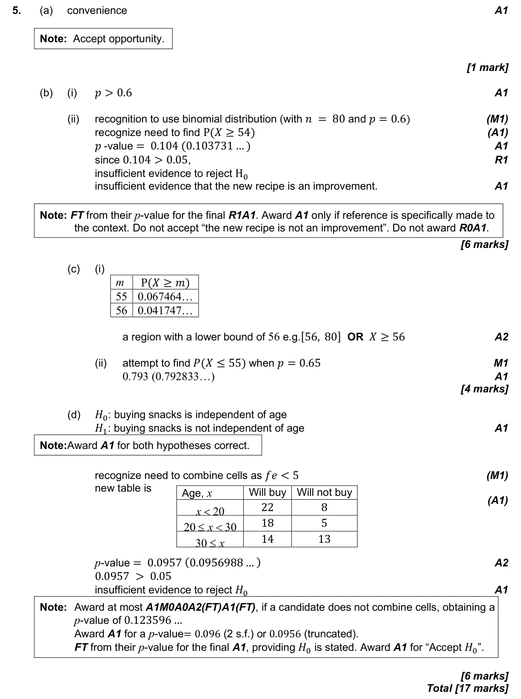

17 marks P2 TZ0 Calculator 4.18 Critical regions, tests for a mean, a proportion or a correlation, and type I and II errors4.11 Hypothesis testing: χ² tests and the t-test4.12 Designing data collection; reliability and validity4.1 Concepts, reliability and sampling techniques Question Hide breakdown abcd Markscheme 